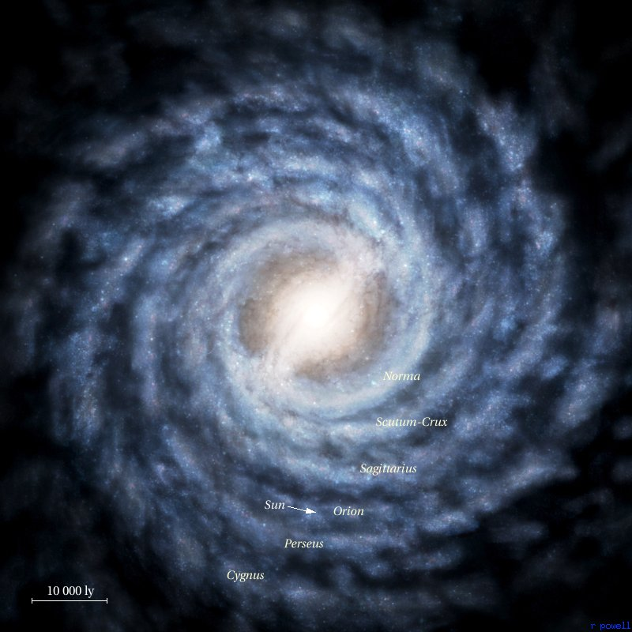
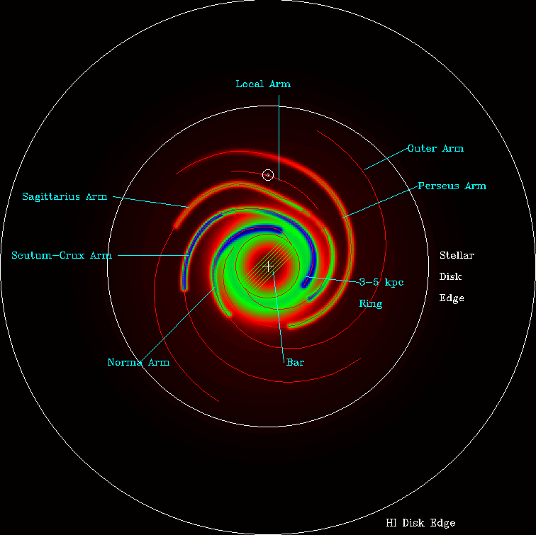

Preface
Earth has been at peace for 400 years. In that time technology has increased rapidly and mankind was able to solve all problems of poverty, sustainability and world hunger. All nations have a seat on the Global Council that makes earths decisions.
Event
On June 15, 2576, a water purification plant in Northern Mexico exploded killing 27 people. The emergency response team that arrived on the site quickly identified that the cause of the destruction was not internal failure. The team discovered what they believed to be large aircraft or satellite wreckage. Closer inspection of the wreckage revealed that there were no survivors the one pilot was incinerated beyond recognition by intense internal fires but some blood and tissue samples were recovered for identification purposes.
This craft appeared only just as it was entering earths atmosphere completely eluding earth's Space Surveillance System which was designed for the specific purpose of detecting and eliminating large space debris that might harm the surface. Further investigation of the craft at a specialized research facility determined that it didn't contain a [[NAME OF GRAVITATIONAL PROPULTION SYSTEM]] that is used on conventional spacecraft. Instead it used a never before seen system that allowed the craft to travel faster than the speed of light.
Examination of the blood and tissue samples was the evidence that determined the ship to be of alien origin. Researchers were unable to determine anything from the limited samples except that it was nothing that existed on earth, and that it was too different to have been genetically engineered.
Solution
The possibility that a more technologically advanced alien species would attack earth scared the planet. The earth hadn't had a single army for hundreds of years, although most countries had a strong law enforcement branch. Every nation began new armies in case the worst happened. Weapons technology was still in development, because crime hasn't been eradicated, but it hasn't had any innovations for the past 150 years since the stun pistol was invented.
The [[United Earth Council]] decided to use the technology gained from the wreckage combined with earths most advanced technology to seek out these aliens before they decide to seek us out. We had no idea whether to expect a peaceful or hostile greeting so the plan would be capable to deal with both possible outcomes. This mission was named the Star Hunter mission. Six identical copies of the most advanced spacecraft designed were made and are scheduled to launch [[[DAY OF FIRST CAMPAIGN SESSION]]] with the earths finest scientists and soldiers.

